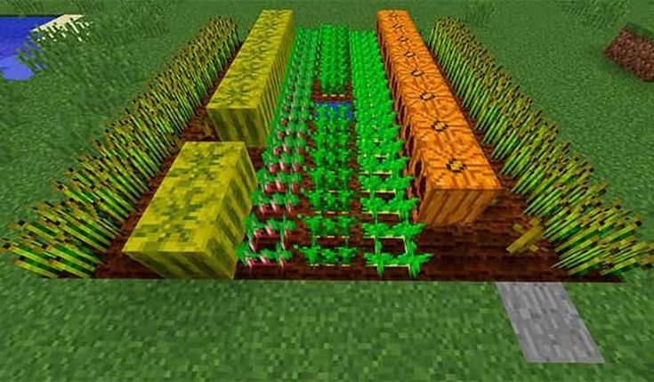

Plantações
A agricultura no Minecraft é essencial para garantir um fornecimento constante de alimentos e recursos valiosos. Plantar frutas, legumes e outras culturas não só sustenta suas aventuras, mas também permite a criação de itens úteis e a domesticação de animais. Cada planta tem características únicas e benefícios, desde a versatilidade das cenouras e batatas até as propriedades mágicas das Maçãs Douradas e dos Melões Reluzentes.
Cultivo de Frutas
1. Maçã
- Plantação: Maçãs não podem ser plantadas diretamente. Elas são coletadas ao derrubar folhas de árvores de carvalho e carvalho escuro.
2. Maçã Dourada
- Plantação: Não pode ser plantada. Maçãs douradas são criadas combinando uma maçã com oito lingotes de ouro.
3. Melancia
- Plantação: Plante sementes de melancia (obtidas ao colocar fatias de melancia na grade de criação) em um bloco de terra ou grama arada (usando uma enxada). Deixe um espaço ao bloco de terra arada para que a melancia cresça.
- Tempo de Crescimento: Cerca de 10-30 minutos no tempo do jogo. O tempo de crescimento pode ser acelerado com o uso de farinha de osso.
4. Melão Reluzente
- Plantação: Não pode ser plantado diretamente. É criado com uma fatia de melancia e pepitas de ouro.
5. Fruta Corus
- Plantação: Plante flores de corus (obtidas ao derrubar uma planta de corus) em um bloco de endstone.
- Tempo de Crescimento: Pode crescer até uma altura significativa em poucos minutos no tempo do jogo.
Colheita de Legumes
1. Cenoura
- Plantação: Plante cenouras diretamente em um bloco de terra ou grama arada.
- Tempo de Crescimento: Cerca de 8-10 minutos no tempo do jogo para crescer completamente. O tempo de crescimento pode ser acelerado com o uso de farinha de osso.
2. Batata
- Plantação: Plante batatas diretamente em um bloco de terra ou grama arada.
- Tempo de Crescimento: Cerca de 8-10 minutos no tempo do jogo para crescer completamente. O tempo de crescimento pode ser acelerado com o uso de farinha de osso.
3. Abóbora
- Plantação: Plante sementes de abóbora (obtidas ao colocar uma abóbora na grade de criação) em um bloco de terra ou grama arada. Deixe um espaço ao bloco de terra arada para que a abóbora cresça.
- Tempo de Crescimento: Cerca de 10-30 minutos no tempo do jogo. O tempo de crescimento pode ser acelerado com o uso de farinha de osso.
4. Beterraba
- Plantação: Plante sementes de beterraba (obtidas ao encontrar beterrabas em aldeias) em um bloco de terra ou grama arada.
- Tempo de Crescimento: Cerca de 8-10 minutos no tempo do jogo para crescer completamente. O tempo de crescimento pode ser acelerado com o uso de farinha de osso.
5. Trigo
- Plantação: Plante sementes de trigo (obtidas ao encontrar trigos em aldeias ou ao quebrar grama do chão) em um bloco de terra ou grama arada.
- Tempo de Crescimento: Cerca de 8-10 minutos no tempo do jogo para crescer completamente. O tempo de crescimento pode ser acelerado com o uso de farinha de osso.
Dicas Gerais para Plantação
- Irrigação: Certifique-se de que os blocos arados estejam próximos à água (até 4 blocos de distância) para mantê-los hidratados, o que acelera o crescimento das plantas.
- Farinha de Osso: Pode ser usada em qualquer planta para acelerar instantaneamente o crescimento.
- Luz: As plantas precisam de um nível de luz de pelo menos 9 para crescer. Se estiver plantando dentro de uma estrutura, use tochas ou outras fontes de luz para garantir que as plantas cresçam.